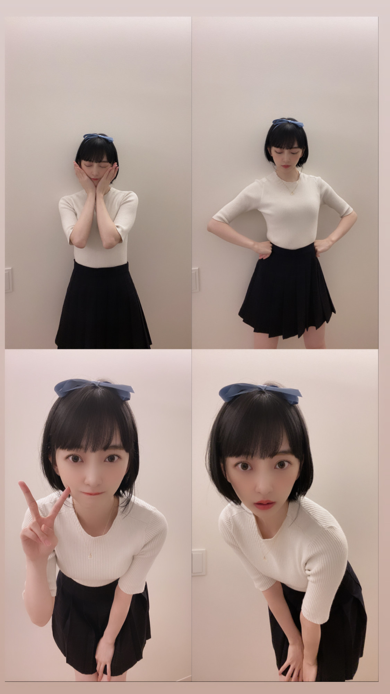
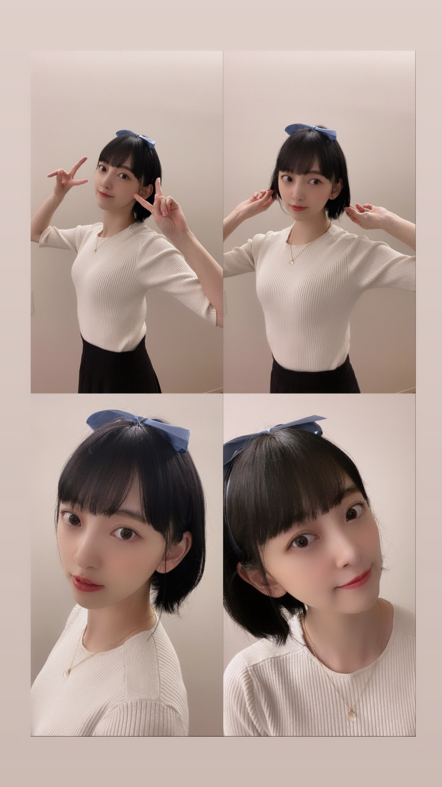
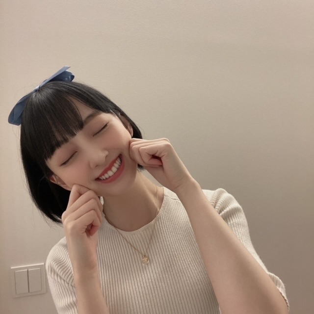

2020/0929Tueもう10月なので
どーも^ - ^
秋刀魚がどうしても食べたいんですけど
まだ食べれていないので
無事、食べれたら報告致します！！！
さて
先日募集させていただきました
" 未央奈にしてほしいハロウィンコスプレ "
たくさんのご意見ありがとうございました☺︎
見させていただきました〜
どれをしようか考えた結果、
再現しやすそう、リクエスト多数 なものを
優先してなるべくたくさんのコスプレを
できたらいいなと思っています^ - ^
二次元様には到底敵いませんが
温かい目で見守っていただけたら...
第一弾はお家にある服で再現できたので
この方から！
"彼女、お借りします"
の更科瑠夏ちゃん
リクエスト多かったー！
髪型かな？


好きな人にはグイグイタイプの瑠夏ちゃん
瑠夏ちゃんの可愛さには頭が上がりません...
どうか瑠夏ちゃんファンの皆さま
お許しください......m(_ _)m
さて
次はあのキャラクターをする予定です！
帽子がチャームポイントかな！
お楽しみに〜
10月たくさんリクエストコスプレ写真
あげる予定ですっ
そして10月3日の有吉反省会2時間spに
真夏さんと出させていただきます^ - ^
だいすきな姉と一緒で楽しめました！
緊張してすごいクールな感じになってしまたけど。笑
ぜひ見てください^ - ^

秋刀魚秋刀魚
2020/09/29 19:06
コメント(255)
こんばんは。
いよいよ10月ですね。早いものです。
生誕Tシャツ楽しみです。
秋刀魚食べたいですよね。
秋の味覚の代名詞、自分はかたくなに秋刀魚を推したいです。
されど高級魚になってしまい、脂がのった安いものを食べたいですが。
自分の代わりに美味しいの食べてくださいよ。
自分は待ち続けます。
ハロウィンコス楽しみですよ！
楽しむ気持ちが肝心です、案じることはないです。
大切なのは可愛く楽しむですね。
可愛い可愛い写真をありがとうございます。
いつも支えられてますよ、頑張れます。
癒しのコレクションに追加させてください。
しみじみと感慨深く可愛いすぎる写真を涙目に眺めることが多いです。
ニット姿も好きです。可愛い、愛おしいです。
染めた黒髪もですが、可愛くいようと何事にも努力してくれてありがとうございます。
有吉反省会も楽しみですよ。
楽しみをありがとうございます！
美味しい秋刀魚を食べてくださいね。
日に日に秋が深めいて特に夜など肌寒くなってきますので、お身体にはお気をつけてくださいね。
大好きですよ！
頑張って行きましょう！
いよいよ10月ですね。早いものです。
生誕Tシャツ楽しみです。
秋刀魚食べたいですよね。
秋の味覚の代名詞、自分はかたくなに秋刀魚を推したいです。
されど高級魚になってしまい、脂がのった安いものを食べたいですが。
自分の代わりに美味しいの食べてくださいよ。
自分は待ち続けます。
ハロウィンコス楽しみですよ！
楽しむ気持ちが肝心です、案じることはないです。
大切なのは可愛く楽しむですね。
可愛い可愛い写真をありがとうございます。
いつも支えられてますよ、頑張れます。
癒しのコレクションに追加させてください。
しみじみと感慨深く可愛いすぎる写真を涙目に眺めることが多いです。
ニット姿も好きです。可愛い、愛おしいです。
染めた黒髪もですが、可愛くいようと何事にも努力してくれてありがとうございます。
有吉反省会も楽しみですよ。
楽しみをありがとうございます！
美味しい秋刀魚を食べてくださいね。
日に日に秋が深めいて特に夜など肌寒くなってきますので、お身体にはお気をつけてくださいね。
大好きですよ！
頑張って行きましょう！
秋刀魚は、昨年が記録的な不漁で、今年も高値の傾向らしい。
さばも捕れなくなってるとの話が。
コスプレ、最初の方のポーズが良い♥️
(*･∀･)
彼女、、、
積極的で明るいタイプか、自分と価値観の合う人か。悩むな……
さばも捕れなくなってるとの話が。
コスプレ、最初の方のポーズが良い♥️
(*･∀･)
彼女、、、
積極的で明るいタイプか、自分と価値観の合う人か。悩むな……
ブログ更新ありがとう
ごめんね、更科瑠夏ちゃん、分からんからまた調べとく
秋刀魚美味しいよね
ごめんね、更科瑠夏ちゃん、分からんからまた調べとく
秋刀魚美味しいよね
ブログの更新ありがとう☺︎
秋刀魚って美味しいよね！
秋の魚と言ったら秋刀魚だよね〜！
自分もまだ食べてれないので、
早く食べたいです！
今後のブログも楽しみに待ってます！
体調には気をつけてね！
応援してます！
大好きです♡
Instagramのフォロワー33万人おめでとう！
投稿毎回観てます！
これからも頑張ってね！！
秋刀魚って美味しいよね！
秋の魚と言ったら秋刀魚だよね〜！
自分もまだ食べてれないので、
早く食べたいです！
今後のブログも楽しみに待ってます！
体調には気をつけてね！
応援してます！
大好きです♡
Instagramのフォロワー33万人おめでとう！
投稿毎回観てます！
これからも頑張ってね！！
ブログ更新ありがとうございます！
似合いすぎだし可愛すぎます！
自分の兄弟も堀未央奈さんと10月15日生まれなので、なんか嬉しいです！
これからも応援してます！頑張ってください！
ヤッホー未央奈ブログ更新ありがとー❗秋刀魚はやく食べれたらいいねー、、インスタでプティ君見てるけど可愛いいい～❗ニコル君も宜しくね❗でわでわ寒暖差に気を付けて健康で活動頑張ってくださいね❗
すちやよ♥️
ブログ更新ありがとうございます。
秋刀魚の季節ですね。小学生の頃はあんまり好きじゃなかったけど、少し大人になってようやく秋刀魚の美味しさに気づくことができました。
瑠夏ちゃんかわいいです。堀さんは彼女、お借りします見てましたか？
有吉反省会、楽しみにしております。
いつも写真ありがとうございます。可愛いです。
秋刀魚の季節ですね。小学生の頃はあんまり好きじゃなかったけど、少し大人になってようやく秋刀魚の美味しさに気づくことができました。
瑠夏ちゃんかわいいです。堀さんは彼女、お借りします見てましたか？
有吉反省会、楽しみにしております。
いつも写真ありがとうございます。可愛いです。
未央奈さま
凄く！凄く！ カワイイです。
いやいやいや、可愛過ぎでしょ！
アニメ「彼女、お借りします」のキャラなんですね。
アニメの方リアルタイムで見れないので録画して
あるのですが、キービジュアルの女の子千鶴ちゃん
しか知らなかったです。
公式サイトを探して、水原千鶴って名前も今知りま
した。
で、更科瑠夏ちゃんと未央奈の姿と見比べています
が、可愛さで言ったら未央奈の方が断突でカワイイ
ですよ！ (≧▽≦)！グッド、グッド
もうちょっと前髪を似せたら瑠夏ファンからは
もっともっと大絶賛されるんじゃないかな（笑）
有吉ゼミ絶対に見ます！ 録画予約もしました。
でもリアルタイムで絶対見ます！！（笑）
告知ありがとうございます！ 危うく見逃して号泣
しちゃう所でした。 わはははは
番組情報の方を確認したのですが、詳細情報が
ありませんでした。（笑笑）
はてさて、まなったんが反省するのか、未央奈が
反省するのか、それとも単なる観客となっている
のか？（笑笑笑） 楽しみにしてますねぇ～
秋刀魚、握り寿司で見かけました。
未央奈の一言で食べたくなりました。（笑）
早速明日さがしてみます。
でも未央奈の方はたぶん塩焼きの方ですよね。
自分は塩焼きも大好物なんですが、家では煙で
とんでもない事になりそうなので（笑）
定食屋さんで食べる事にします。
食べログ見よ・・・
先のブログでの連続コメすみません。
ちょっと迷惑だったかなぁ～って反省しており
ます。m(__)m
では、さよみおなぁ～
これってゴロ合わせになってないなぁ～（笑）
凄く！凄く！ カワイイです。
いやいやいや、可愛過ぎでしょ！
アニメ「彼女、お借りします」のキャラなんですね。
アニメの方リアルタイムで見れないので録画して
あるのですが、キービジュアルの女の子千鶴ちゃん
しか知らなかったです。
公式サイトを探して、水原千鶴って名前も今知りま
した。
で、更科瑠夏ちゃんと未央奈の姿と見比べています
が、可愛さで言ったら未央奈の方が断突でカワイイ
ですよ！ (≧▽≦)！グッド、グッド
もうちょっと前髪を似せたら瑠夏ファンからは
もっともっと大絶賛されるんじゃないかな（笑）
有吉ゼミ絶対に見ます！ 録画予約もしました。
でもリアルタイムで絶対見ます！！（笑）
告知ありがとうございます！ 危うく見逃して号泣
しちゃう所でした。 わはははは
番組情報の方を確認したのですが、詳細情報が
ありませんでした。（笑笑）
はてさて、まなったんが反省するのか、未央奈が
反省するのか、それとも単なる観客となっている
のか？（笑笑笑） 楽しみにしてますねぇ～
秋刀魚、握り寿司で見かけました。
未央奈の一言で食べたくなりました。（笑）
早速明日さがしてみます。
でも未央奈の方はたぶん塩焼きの方ですよね。
自分は塩焼きも大好物なんですが、家では煙で
とんでもない事になりそうなので（笑）
定食屋さんで食べる事にします。
食べログ見よ・・・
先のブログでの連続コメすみません。
ちょっと迷惑だったかなぁ～って反省しており
ます。m(__)m
では、さよみおなぁ～
これってゴロ合わせになってないなぁ～（笑）
みおな、こんばんは！更新ありがとう。 近況報告ありがとうございます。 では、毎日みおなに良いこと沢山ありますように！ おやすみおな！！
未央奈ちゃん♪ブログの更新ありがとうね♪凄く嬉しいよ！
凄く可愛い～！本当にめちゃくちゃ可愛い過ぎる～！
自分はアニメは観たことないから調べてみたけど凄く完璧に再現されてるよ！更科瑠夏ちゃんごめんね。自分はアニメの更央奈ちゃんの方が凄く可愛いよ(*^^*)
次のリクエストコスプレ凄く楽しみにしてるね♪
本当に可愛いよ！
本当に未央奈ちゃんスタイル良くてどのお洋服も凄く似合ってるよ！髪型も凄く可愛いくて似合ってるよ(*^^*)
有吉反省会必ず観るね♪
あと、自分も秋刀魚食べれてないから自分も食べたら報告するね♪
また、ブログの更新楽しみにしてるね♪未央奈ちゃん大好きだよ！
堀 未央奈神推し秀喜より！(≧∇≦)
凄く可愛い～！本当にめちゃくちゃ可愛い過ぎる～！
自分はアニメは観たことないから調べてみたけど凄く完璧に再現されてるよ！更科瑠夏ちゃんごめんね。自分はアニメの更央奈ちゃんの方が凄く可愛いよ(*^^*)
次のリクエストコスプレ凄く楽しみにしてるね♪
本当に可愛いよ！
本当に未央奈ちゃんスタイル良くてどのお洋服も凄く似合ってるよ！髪型も凄く可愛いくて似合ってるよ(*^^*)
有吉反省会必ず観るね♪
あと、自分も秋刀魚食べれてないから自分も食べたら報告するね♪
また、ブログの更新楽しみにしてるね♪未央奈ちゃん大好きだよ！
堀 未央奈神推し秀喜より！(≧∇≦)
ブログ更新ありがとう！
コスプレ第一弾カワイイ、この先も楽しみ
10月ですね、未央奈ちゃんの誕生月だ！
有吉反省会も観ます！
コスプレ第一弾カワイイ、この先も楽しみ
10月ですね、未央奈ちゃんの誕生月だ！
有吉反省会も観ます！
スマートすぎるから秋刀魚を食べてスタミナつけてね。
今日もお疲れ様！
未央奈ちゃんのコスプレはどれも可愛いよ♪
未央奈ちゃんのコスプレはどれも可愛いよ♪
素敵❕❤️❤️❤️❤️❤️笑顔
素敵❕❤️❤️❤️❤️❤️笑顔
可愛い～～～⤴️⤴️⤴️❕❤️❤️❤️❤️❤️笑顔
可愛い～～～⤴️⤴️⤴️❕❤️❤️❤️❤️❤️笑顔
めちゃめちゃ、可愛い～～～⤴️⤴️⤴️❕❤️❤️❤️❤️❤️笑顔
超可愛い～～～⤴️⤴️⤴️❕❤️❤️❤️❤️❤️笑顔
(＠＾▽゜＠）ゞ❤️❤️❤️
❇️❇️おすまし！⚜️❇️⭐彡
みおなブログ更新ありがと！
ぎゃんかわすぎだって
今日の疲れ吹き飛んだ！ありがと〜
また楽しみに待ってまーす！
ぎゃんかわすぎだって
今日の疲れ吹き飛んだ！ありがと〜
また楽しみに待ってまーす！
すきー！
あきちゃんです、みおなちゃんディズニーのお姫様になって欲しいな、そして僕わなんとディズニーランドに行ってきました。新しいエリアよかったよ。そしてその後齋藤飛鳥ちゃん主演映画観てきました。あと10月と言えばみおなちゃんの誕生日だね、僕も誕生日です、僕わみおなちゃんの後半欅坂46さんが新しく改名する14日が誕生日です、みおなちゃんと1日違いだからうれしいな、もし来年握手会会ったらお祝いしてあげたいな。来年にわコロナウイルスも落ちつくでしょう。そしたら握手会とコンサートツアーできたら来年こそわチケット取って行きますね、僕わみおなちゃんが大好きだから生写真も写真集もいっぱい持っています。みおなちゃん来年会えるのを楽しみにしてます。❤❤❤❤❤❤❤❤❤❤❤❤❤❤❤❤❤❤❤
更新ありがとう
僕も秋刀魚、食べてないよ。
今年は不漁で高いし、食べれないかも。
未央奈ちゃんは、秋刀魚をどうやって食べるの？
やっぱり、大根おろしに醤油たらして、秋刀魚と一緒食べるよね！
未央奈の七変化、楽しみにしてるね
未央奈ちゃん、大好き❤️
僕も秋刀魚、食べてないよ。
今年は不漁で高いし、食べれないかも。
未央奈ちゃんは、秋刀魚をどうやって食べるの？
やっぱり、大根おろしに醤油たらして、秋刀魚と一緒食べるよね！
未央奈の七変化、楽しみにしてるね
未央奈ちゃん、大好き❤️
未央奈ー！ブログありがとう！(,,•﹏•,,)
秋刀魚が今年は不漁らしくてお高いんだって！でも塩焼きにした秋刀魚食べたいよね～。
塩焼き秋刀魚食べないとなんか秋が始まった気がしないよね！笑
好きな人にはグイグイタイプの女の子なんだね！写真からも少しその雰囲気が伝わってくるよ！
全部の写真が可愛すぎる、、、可愛いよ～～～
未央奈は好きな人に対してはグイグイ行けるタイプですか？？？
帽子がチャームポイントか！楽しみすぎる～
真夏さんのことだいすきな姉って言ってるのがなんか私も嬉しい気持ちになる！！！
今日もモバメありがとう！！！！！
曇っててもさ、このような気候だと全然嬉しいよね~涼しくて！
「ナカダカナシカ」コールするしかないね！
二期生曲を歌番組で披露する事が出来たら最高なのになあああああ～～～
沢山ダンスしたりしたのかな？眠い時に寝ちゃおう！
俺は実は甘党で甘い食べ物大好きなんだよね～
昨日、自分の働いているお店がタピオカも売ってて、自分で特製の激甘黒糖ミルクティータピオカ作ったの！甘すぎてやばかったけどおいしかった～(,,•﹏•,,)
甘いもの食べた後、辛い食べ物食べたくなって、その次に甘いもの食べたくなるよね、、、無限ルーーーーープ、、、
秋花粉がちょっとつらい時期だけど、お互いに乗り越えよう！
未央奈の秋冬コーデとかハロウィンコスプレ楽しみにしてるね！！！
いつもいつも沢山更新ありがとう！
秋刀魚が今年は不漁らしくてお高いんだって！でも塩焼きにした秋刀魚食べたいよね～。
塩焼き秋刀魚食べないとなんか秋が始まった気がしないよね！笑
好きな人にはグイグイタイプの女の子なんだね！写真からも少しその雰囲気が伝わってくるよ！
全部の写真が可愛すぎる、、、可愛いよ～～～
未央奈は好きな人に対してはグイグイ行けるタイプですか？？？
帽子がチャームポイントか！楽しみすぎる～
真夏さんのことだいすきな姉って言ってるのがなんか私も嬉しい気持ちになる！！！
今日もモバメありがとう！！！！！
曇っててもさ、このような気候だと全然嬉しいよね~涼しくて！
「ナカダカナシカ」コールするしかないね！
二期生曲を歌番組で披露する事が出来たら最高なのになあああああ～～～
沢山ダンスしたりしたのかな？眠い時に寝ちゃおう！
俺は実は甘党で甘い食べ物大好きなんだよね～
昨日、自分の働いているお店がタピオカも売ってて、自分で特製の激甘黒糖ミルクティータピオカ作ったの！甘すぎてやばかったけどおいしかった～(,,•﹏•,,)
甘いもの食べた後、辛い食べ物食べたくなって、その次に甘いもの食べたくなるよね、、、無限ルーーーーープ、、、
秋花粉がちょっとつらい時期だけど、お互いに乗り越えよう！
未央奈の秋冬コーデとかハロウィンコスプレ楽しみにしてるね！！！
いつもいつも沢山更新ありがとう！
キャラは知らないですが、
未央奈が可愛い事だけは、
凄く分かります。
可愛い…
未央奈が可愛い事だけは、
凄く分かります。
可愛い…
みおなちゃん、こんばんは。
10月3日の有吉反省会2時間sp、僕は絶対見るね。楽しみにしています。
秋刀魚、おいしいですよね。僕はかば焼きが好きです。でも、今年は高くて、なかなか食べれそうにないですね・・・。
最後の写真のみおなちゃん、めっちゃかわいいです。
みおなちゃん、体調に気をつけて仕事頑張ってね。
またコメントするね。
10月3日の有吉反省会2時間sp、僕は絶対見るね。楽しみにしています。
秋刀魚、おいしいですよね。僕はかば焼きが好きです。でも、今年は高くて、なかなか食べれそうにないですね・・・。
最後の写真のみおなちゃん、めっちゃかわいいです。
みおなちゃん、体調に気をつけて仕事頑張ってね。
またコメントするね。
更新ありがとうございます❤
更科瑠夏ちゃんはわからないけど未央奈ちゃんかわいい～
コスプレ未央奈ちゃんにキュンキュン❤してます
今後のコスプレにもかわいさを期待します。
僕もまだ秋刀魚食べてないです。
僕も食べたくなってきました。
美味しいですよね。
体調に気をつけてね。
更科瑠夏ちゃんはわからないけど未央奈ちゃんかわいい～
コスプレ未央奈ちゃんにキュンキュン❤してます
今後のコスプレにもかわいさを期待します。
僕もまだ秋刀魚食べてないです。
僕も食べたくなってきました。
美味しいですよね。
体調に気をつけてね。
堀ちゃんブログ更新ありがとうございます。
有吉反省会絶対見ます。
楽しみです。
応援してます。
もうすぐ誕生日ですね。
有吉反省会絶対見ます。
楽しみです。
応援してます。
もうすぐ誕生日ですね。
コスプレありがとうございます
最高ですー
個人的には、耳をすませばの雫などジブリのキャラをやって欲しいです。
でも、あえてホラー映画のキャラクターも見てみたいです。
よろしくお願いします
読んで頂けたら嬉しいです
最高ですー
個人的には、耳をすませばの雫などジブリのキャラをやって欲しいです。
でも、あえてホラー映画のキャラクターも見てみたいです。
よろしくお願いします
読んで頂けたら嬉しいです
未央奈ちゃん、 こんばんは！
サンマまだお高いんじゃないでしょうかね、自分は加工品のお惣菜になった物を買ってますんで、あまり変動が少ないかも知れませんけど、塩焼き美味しいですよね。
コスプレ良いです。すんっごく良いです。たまらんです。またお願いします。
朝晩寒いくらいなので、ご自愛くださいね。
おやすみ
サンマまだお高いんじゃないでしょうかね、自分は加工品のお惣菜になった物を買ってますんで、あまり変動が少ないかも知れませんけど、塩焼き美味しいですよね。
コスプレ良いです。すんっごく良いです。たまらんです。またお願いします。
朝晩寒いくらいなので、ご自愛くださいね。
おやすみ
おつかれん
いつも可愛くて素敵ですね！大好きです。
もっとウィンクしてくれませんか？未央奈ちゃんのウィンク好きです！
もっとウィンクしてくれませんか？未央奈ちゃんのウィンク好きです！
秋刀魚食べたいね。
ブログ更新ありがとう！
瑠夏ちゃんコスプレ可愛すぎるよーーー(;_;) ボブに青いリボンが最高に似合ってるし、2次元に負けない未央奈ちゃん最強(;_;)
昨日のストーリーの動画もあまりの可愛さに発狂してた笑
ライブや握手会が行えない中で色んな形で楽しませてくれて本当にありがとう！いつもすごく元気もらってます。
有吉反省会にみおまなつコンビが…！楽しみ！リアタイするね☺︎
瑠夏ちゃんコスプレ可愛すぎるよーーー(;_;) ボブに青いリボンが最高に似合ってるし、2次元に負けない未央奈ちゃん最強(;_;)
昨日のストーリーの動画もあまりの可愛さに発狂してた笑
ライブや握手会が行えない中で色んな形で楽しませてくれて本当にありがとう！いつもすごく元気もらってます。
有吉反省会にみおまなつコンビが…！楽しみ！リアタイするね☺︎
ブ～ン、飛んできたよっ 
未央奈先生、『ライオンのグータッチ』にも
出るよね、楽しみ！
※カップスターのコント、面白かったよ
see you！ (^^)/
未央奈先生、『ライオンのグータッチ』にも
出るよね、楽しみ！
※カップスターのコント、面白かったよ
see you！ (^^)/
高級魚になりつつあると噂の！
養殖でいいから安価でいただきたいですね。
お～～
お～～
お～～
これはこれで･･･
帽子？
帽子？
･･･
あ！
かいぞｋ･･･（笑）
反省会って打とうとしたら
藩政かい
って出て、思わず「江戸かっ！」ってツ･･･（笑）
養殖でいいから安価でいただきたいですね。
お～～
お～～
お～～
これはこれで･･･
帽子？
帽子？
･･･
あ！
かいぞｋ･･･（笑）
反省会って打とうとしたら
藩政かい
って出て、思わず「江戸かっ！」ってツ･･･（笑）
10月は未央奈さんの誕生月ですね
コスプレすごく似合っててかわいい
これからも期待大です
乃木坂毎月劇場の予告動画見ました
配信まであと２日待ち遠しいです
有吉反省会とともに楽しみに待ちます
コスプレすごく似合っててかわいい
これからも期待大です
乃木坂毎月劇場の予告動画見ました
配信まであと２日待ち遠しいです
有吉反省会とともに楽しみに待ちます
かわいすぎ！
コスプレの募集、見逃してたー(>_<)
「ティファニーで朝食を」の黒いドレスの
コスプレ希望です！！！
冒頭のティファニーのショーウィンドウを
眺めているシーンを見るたびに、みおなが
コスプレしたら似合うんじゃないかと
妄想していました(笑)
リアリティーを追求してもよさそうだし、
みおな流に解釈してもよさそう。
名前もホリーとホーリーでほとんど同じ(笑)
「ティファニーで朝食を」の黒いドレスの
コスプレ希望です！！！
冒頭のティファニーのショーウィンドウを
眺めているシーンを見るたびに、みおなが
コスプレしたら似合うんじゃないかと
妄想していました(笑)
リアリティーを追求してもよさそうだし、
みおな流に解釈してもよさそう。
名前もホリーとホーリーでほとんど同じ(笑)
コスプレいいね！まさにデートに誘いたくなる女の子(^^)✨
今年は秋刀魚が高いねー、３匹で400円もしよる、、
今年は秋刀魚が高いねー、３匹で400円もしよる、、
堀ちゃんは河北メイクするとどんな感じになりますか？
未央奈〜！！
ブログ更新ありがとう
こんばんはぁ
ハロウィンコスプレ最高すぎる！
昨日からオンライン授業再開
大変だけど未央奈がブログとかインスタとか更新してくれるからそれみて元気もらえる！ありがとう
10月もお互い頑張ろ
次の更新も待ってるね〜！！
ブログ更新ありがとう
こんばんはぁ
ハロウィンコスプレ最高すぎる！
昨日からオンライン授業再開
大変だけど未央奈がブログとかインスタとか更新してくれるからそれみて元気もらえる！ありがとう
10月もお互い頑張ろ
次の更新も待ってるね〜！！
秋も可愛いい、みおなちゃん。
未央奈久しぶり(^^)/
秋刀魚は身体にも肌にも良いからどんどん食べてね(^-^)/
真夏と一緒に出るのか〜 未央奈も今ではお姉さんだけどね(笑)昨日クイズ番組の生放送にれなちとゆりゆりが出てて最後まで残ってた！れなちがお姉さんしてて2期生もみんな大人になったな〜と感じた。未央奈が2期生を引っ張って頑張ってきたと思う所があるから尚更嬉しいんだよm(._.)m
今年も残り少なくなったけど配信ライブとか番組出演頑張って では('ー')/~~
秋刀魚は身体にも肌にも良いからどんどん食べてね(^-^)/
真夏と一緒に出るのか〜 未央奈も今ではお姉さんだけどね(笑)昨日クイズ番組の生放送にれなちとゆりゆりが出てて最後まで残ってた！れなちがお姉さんしてて2期生もみんな大人になったな〜と感じた。未央奈が2期生を引っ張って頑張ってきたと思う所があるから尚更嬉しいんだよm(._.)m
今年も残り少なくなったけど配信ライブとか番組出演頑張って では('ー')/~~
堀ちゃん今日もお疲れ様ー！
コスプレとても可愛い！
リボンとかカチューシャとか言って堀ちゃんほんと似合う。
もちろんボブの堀ちゃんも最高ですよ！
次のコスプレも楽しみー
握手会開催できる状況になったら
早く握手会で会いたいです！
コスプレとても可愛い！
リボンとかカチューシャとか言って堀ちゃんほんと似合う。
もちろんボブの堀ちゃんも最高ですよ！
次のコスプレも楽しみー
握手会開催できる状況になったら
早く握手会で会いたいです！
コスプレする未央奈ちゃん可愛い。
ありがとー。とても楽しくなるブログありがとー
乃木坂では観れないブログならではの楽しさありがとー
またのブログ更新楽しみにしてます。
秋刀魚食べたら報告お願いいたします。
秋刀魚食べれますように。
ありがとー。とても楽しくなるブログありがとー
乃木坂では観れないブログならではの楽しさありがとー
またのブログ更新楽しみにしてます。
秋刀魚食べたら報告お願いいたします。
秋刀魚食べれますように。
お疲れさま～ 
更科瑠夏ちゃん？オイラ分からんが…可愛い 堀ちゃんだからカワイー
焼き芋焼き芋…食べ隊∠( 'ω')／
更科瑠夏ちゃん？オイラ分からんが…可愛い
焼き芋焼き芋…食べ隊∠( 'ω')／
未央奈ちゃんブログ更新ありがとう！！
うわぁぁ可愛すぎるよ⸜❤︎⸝
瑠夏ちゃんめっっっちゃ似合ってます！ぴったり！
髪型もだし、雰囲気も表情もあってます〜！
まだまだやってくれるの楽しみだなぁ⸜❤︎⸝
レムちゃんみてみたいです！！
え？！？！有吉反省会でるんですね！
個人的にものすごく好きな番組なので楽しみです〜！︎︎︎︎︎☺︎
未央奈ちゃんの活躍が色々なところで見れてうれしいです！
withさんも素敵でした！
いつもありがとうございます
だいすき！
うわぁぁ可愛すぎるよ⸜❤︎⸝
瑠夏ちゃんめっっっちゃ似合ってます！ぴったり！
髪型もだし、雰囲気も表情もあってます〜！
まだまだやってくれるの楽しみだなぁ⸜❤︎⸝
レムちゃんみてみたいです！！
え？！？！有吉反省会でるんですね！
個人的にものすごく好きな番組なので楽しみです〜！︎︎︎︎︎☺︎
未央奈ちゃんの活躍が色々なところで見れてうれしいです！
withさんも素敵でした！
いつもありがとうございます
だいすき！
モバメありがとう。
肩こりにはバッチのレスキュークリームがよく効きますよ。
本来の使い方とは少し違うけど。
他の人から教えてもらったんだ。
僕には一番よく効いてます。肩の痛みがかなり無くなりました。
コスプレ期待してます。
では、
肩こりにはバッチのレスキュークリームがよく効きますよ。
本来の使い方とは少し違うけど。
他の人から教えてもらったんだ。
僕には一番よく効いてます。肩の痛みがかなり無くなりました。
コスプレ期待してます。
では、
未央奈ちゃんのコスプレ似合ってるよ！
モバメもありがとう✨
10月3日の有吉反省会見るね
モバメもありがとう✨
10月3日の有吉反省会見るね
未央奈さん、ブログ更新ありがとう。どこにでもいるおっさんです。
未央奈さんのコスプレは、2次元を越える。
最強！
ではは
ひでき
未央奈さんのコスプレは、2次元を越える。
最強！
ではは
ひでき
更科瑠夏ちゃんにめちゃくちゃ似てる！！！
未央奈ありがとう！！！
未央奈ありがとう！！！
みおちゃんブログありがと！
ハロウィンコスプレリクエスト、すっごい可愛いよー。
これからどんなのがあがるのかワクワクだよー。
10月は大好きなみおちゃんのお誕生日月だし、楽しい嬉しいがたくさんだね♡
また更新楽しみにしてるねん！
ハロウィンコスプレリクエスト、すっごい可愛いよー。
これからどんなのがあがるのかワクワクだよー。
10月は大好きなみおちゃんのお誕生日月だし、楽しい嬉しいがたくさんだね♡
また更新楽しみにしてるねん！


ｿﾉﾏﾝﾏｯ(oﾟ∀ﾟ)=○